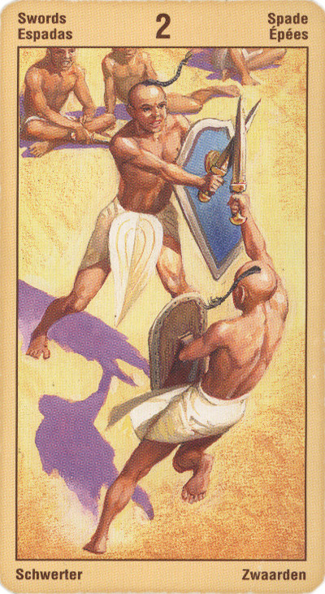

Двойка Мечей
Два мнения, два чувства или два человека противостоят друг другу, а вы стремитесь их примирить, добиться того, чтобы они жили в мире и гармонии.
В качестве альтернативы данная карта может указывать на то, что вы столкнулись с дилеммой и не способны выбрать какой-то один вариант развития событий, что вы колеблетесь и откладываете принятие решения. Эта карта указывает на ситуации, в которых человека охватывают сильные, буквально гложущие его сомнения.
Импульс, который задается тузом мечей, то есть Сила, встречается с сопротивлением Среды. Двойка на низшем уровне, - столкновение.
Сокровенное значение этой карты - выработка некоторой равнодействующей, приход к какому-то конструированному компромиссу. Поэтому двойка мечей может означать также сотрудничество, согласие, гармонию (поверхностную).
Карта двойственности. Вынужденное сотрудничество для выхода из тупиковой ситуации. Дружба или партнерство из выгоды. Временные отношения, гражданский брак. Выбор между двумя возможностями. Ссоры, кратковременные перемирия.
В перевернутом виде советует вмешаться, предложить свою помощь или вообще принять меры. Жить в этом мире означает сталкиваться с конфликтами и Двойка Мечей в перевернутом положении может предполагать, что сейчас именно это и надо сделать, при этом избегая импульсивных действий.
Также данная карта может указывать на ложь и обман, а еще на то, что правда вскоре выплывет наружу. Вы можете чувствовать, что сбиты с толку; мир и согласие, которое, вы ощущаете, притворны и искусственны.
В перевернутом положении карта символизирует затухание Силы, двойственность, фальшивость, бесчестье, предательство, "липовых" друзей, ложь.